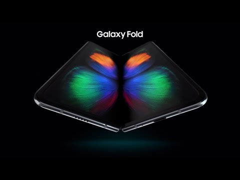

2008-2018
During this period, smartphones became more advanced with the introduction of 3G and 4G networks, allowing faster internet access. The Apple iPhone continued to dominate the market with new models and iOS updates, while Android emerged as a strong competitor with a variety of devices from different manufacturers. Features like high-resolution cameras, app stores, and mobile payments became standard. Notable devices include the iPhone 3G (2008), Samsung Galaxy S (2010), and Google Pixel (2016).
The end of this era is marked by the transition to 5G technology and the introduction of foldable smartphones.